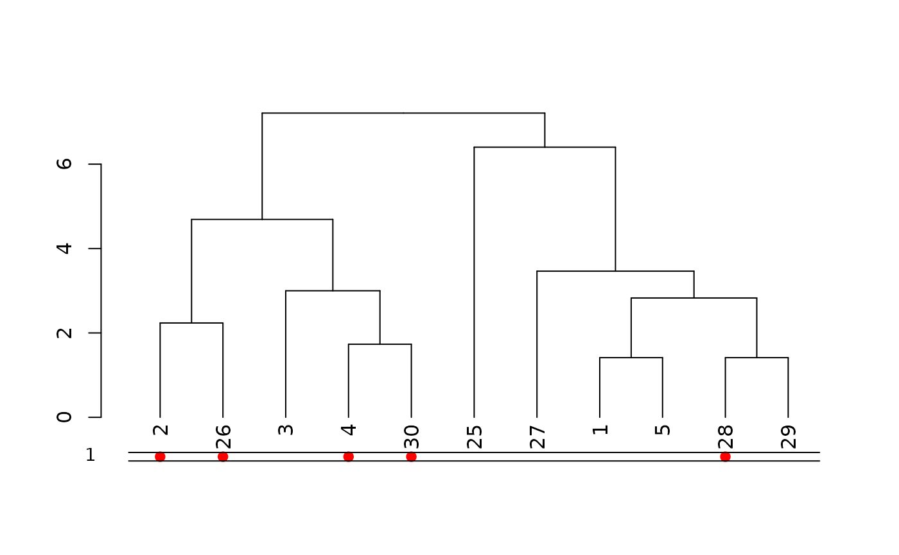
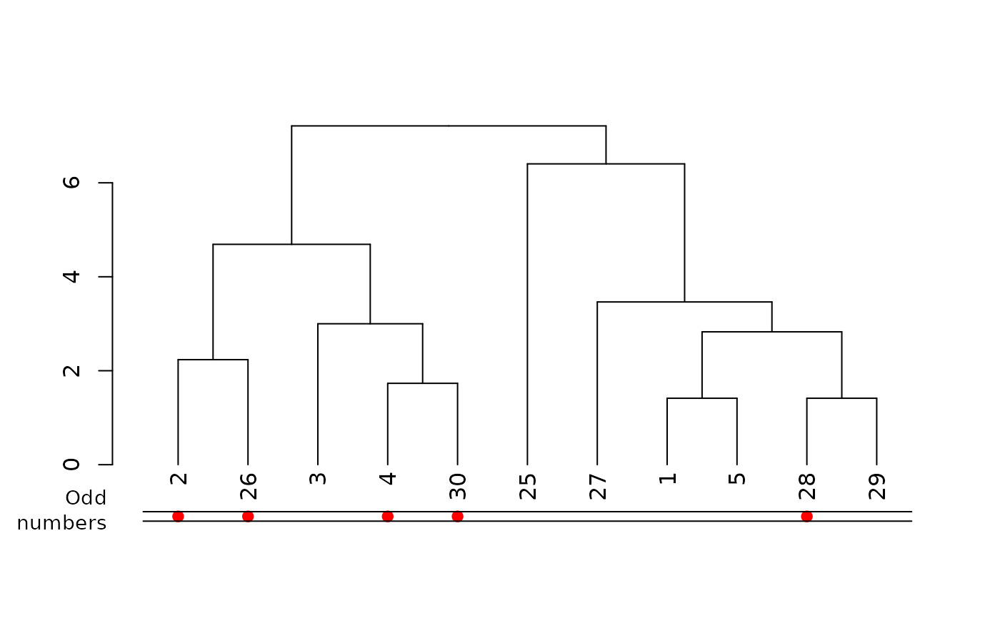
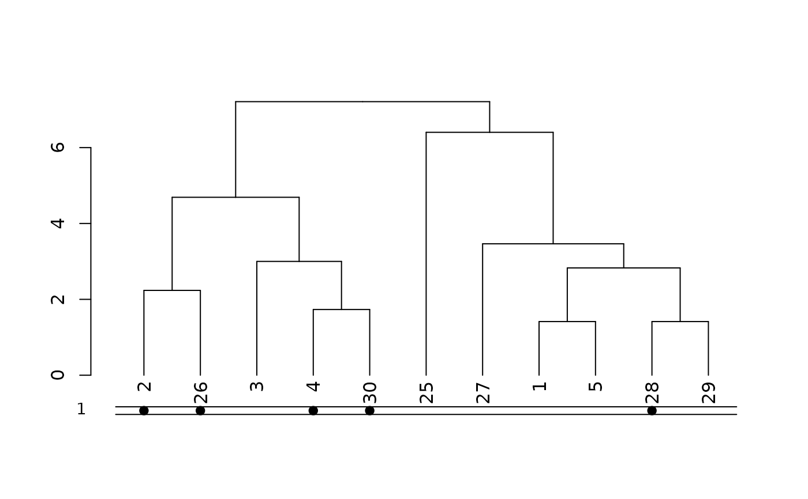
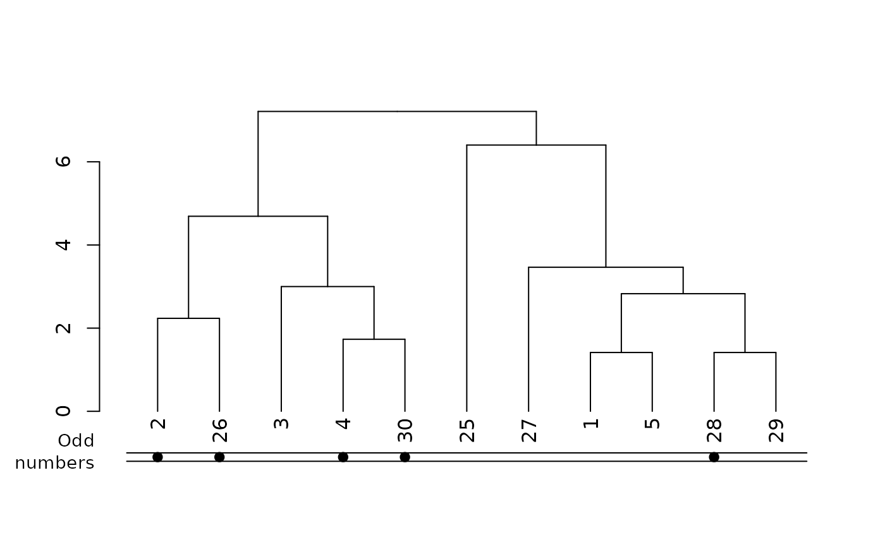
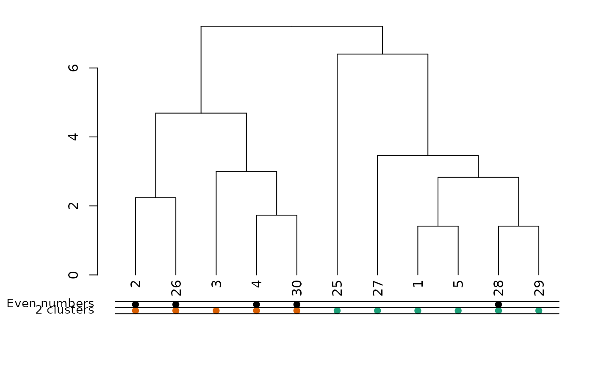
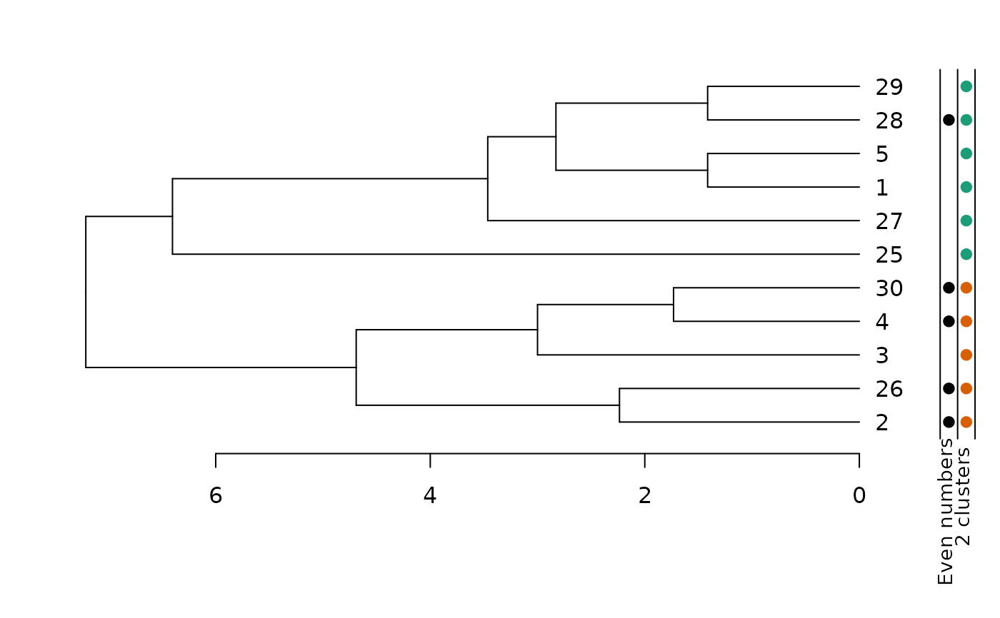
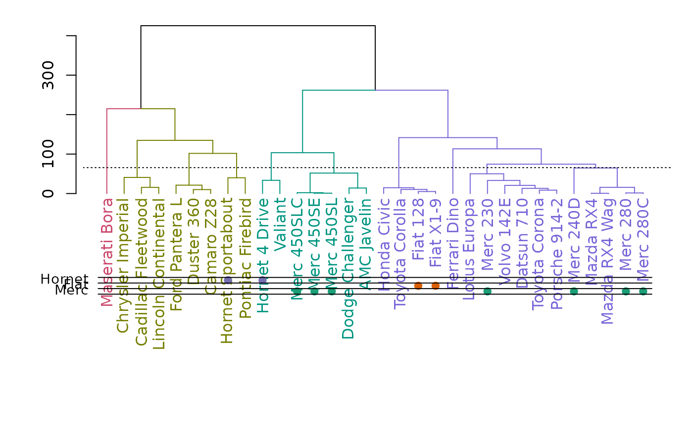
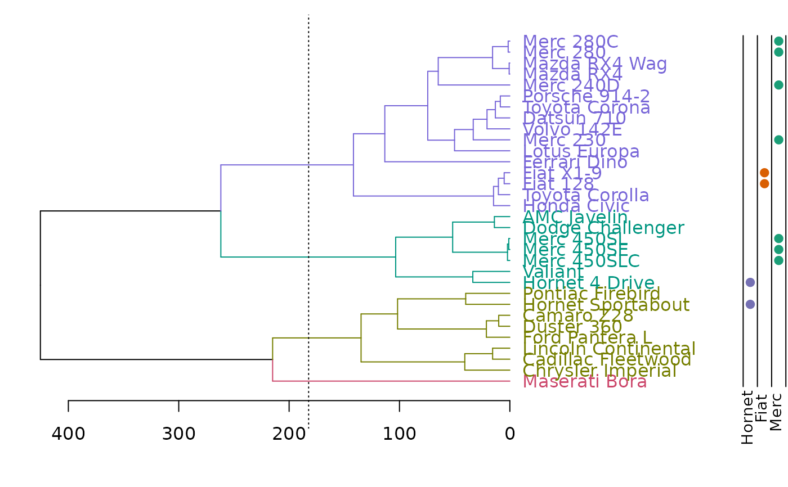

Add colored dots next to a dendrogram, usually corresponding to either clusters or some outside categorization.
colored_dots(
colors,
dend,
rowLabels = NULL,
cex.rowLabels = 0.9,
add = TRUE,
y_scale,
y_shift,
text_shift = 1,
sort_by_labels_order = TRUE,
horiz = FALSE,
dot_size = 1,
...
)This function is based on the plotHclustColors from the moduleColor R package. It was modified so that it would work with dendrograms (and not just hclust objects), as well allow to add the colored dots on top of an existing plot (and not only as a seperate plot).
See: https://cran.r-project.org/package=moduleColor For more details.
Coloring of the dots beside the dendrogram. Either a vector (one color per object) or a matrix (can also be an array or a data frame) with each column giving one group with color per object. Each column will be plotted as a colored point (when horiz = FALSE) under the dendrogram. As long as the sort_by_labels_order paramter is TRUE (default), the colors vector/matrix should be provided in the order of the original data order (and it will be re-ordered automatically to the order of the dendrogram)
a dendrogram object. If missing, the colors are plotted without and re-ordering (this assumes that the colors are already ordered based on the dend's labels) This is also important in order to get the correct height/location of the colored dots (i.e.: adjusting the y_scale and y_shift)
Labels for the colorings given in colors. The labels will be printed to the
left of the color rows in the plot. If the argument is given, it must be a vector of length
equal to the number of columns in colors. If not given, names(colors)
will be used if available. If not, sequential numbers
starting from 1 will be used.
Font size scale factor for the row labels. See par.
logical(TRUE), should the colored dots be added to an existing dendrogram plot?
how much should the dots be stretched on the y axis? If no dend is supplied - the default will be 1
where should the dots be plotted underneath the x axis? By default it will try to locate the dots underneath the labels (it may miss, in which case you would need to enter a number manually) If no dend is supplied - the default will be 0
a dendrogram object
logical(TRUE) - if TRUE (default), then the order of the colored dots will be sorted based on the order needed to change the original order of the observations to the current order of the labels in the dendrogram. If FALSE the colored dots are plotted as-is, based on the order of the colors vector.
logical (FALSE by default). Set to TRUE when using plot(dend, horiz = TRUE)
numeric (1 by default). Passed to cex argument in points
ignored at this point.
An invisible vector/matrix with the ordered colors.
The reason you might choose colored_dots over colored_bars is when you have a lot of group types and/or a really large dendrogram. Hint: Make a group for each categorical factor and color it one color when true, and assign a fully transparent color when false.
You will often need to adjust the y_scale, y_shift and the text_shift parameters, in order to get the dots in the location you would want.
(This can probably be done automatically, but will require more work. since it has to do with the current mar settings, the number of groups, and each computer's specific graphic device. patches for smarter defaults will be appreciated)
rows_picking <- c(1:5, 25:30)
dend <- (iris[rows_picking, -5] * 10) %>%
dist() %>%
hclust() %>%
as.dendrogram()
odd_numbers <- rows_picking %% 2
cols <- c("red", "white")[odd_numbers + 1]
plot(dend)
colored_dots(cols, dend)

# Example of adjusting postion of dots
plot(dend)
colored_dots(cols, dend,
y_shift = -1,
rowLabels = "Odd\n numbers"
)

rows_picking <- c(1:5, 25:30)
dend <- (iris[rows_picking, -5] * 10) %>%
dist() %>%
hclust() %>%
as.dendrogram()
odd_numbers <- rows_picking %% 2
# For leaves that shouldn't have dots, make them the same color as the background,
# or set the alpha value to fully transparant
cols <- c("black", "white")[odd_numbers + 1]
# scale is off
plot(dend)
colored_dots(cols, dend)

# move and scale a bit
plot(dend)
colored_dots(cols, dend,
y_shift = -1,
rowLabels = "Odd\n numbers"
)

# Now let's cut the tree and add that info to the plot:
k2 <- cutree(dend, k = 2)
cols2 <- c("#1b9e77", "#d95f02")[k2]
par(mar = c(5, 6, 1, 1))
plot(dend)
colored_dots(cbind(cols2, cols), dend,
rowLabels = c("2 clusters", "Even numbers")
)

# The same, but with an horizontal plot!
par(mar = c(6, 2, 2, 4))
plot(dend, horiz = TRUE)
colored_dots(cbind(cols2, cols), dend,
rowLabels = c("2 clusters", "Even numbers"),
horiz = TRUE
)

# ==============================
# ==============================
## mtcars example
# Create the dend:
dend <- as.dendrogram(hclust(dist(mtcars)))
# Get all company names
comp_names <- unlist(lapply(rownames(mtcars), function(x) strsplit(x, " ")[[1]][[1]]))
# Get the top three occurring companies
top_three <- sort(table(comp_names), decreasing = TRUE)[1:3]
# Match the top three companies to where they are found in the dendrogram labels
top_three <- sapply(names(top_three), function(x) grepl(x, labels(dend)))
top_three <- as.data.frame(top_three)
# "top_three" is now a data frame of the top three companies as columns.
# Each column represents a vector (rows) which is the length of labels(dend).
# The vector has values TRUE and FALSE, for whether the company name matched
# labels(dend)[i]
# Colorblind friendly vector of HEX colors
colorblind_friendly <- c("#1b9e77", "#d95f02", "#7570b3")
# If we run the for-loop on "top_three" we will turn the vectors into a character-type too early,
# so make a copy to "colored_dataframe" which we will work on
colored_dataframe <- top_three
for (i in 1:3) {
# This replaces TRUE values with a color from our vector of colors
colored_dataframe[top_three[, i], i] <- colorblind_friendly[[i]]
# This replaces FALSE values with black HEX, but fully transparent (invisible on plot)
colored_dataframe[!top_three[, i], i] <- "#00000000"
}
# Color branches and labels by "cutting" the dendrogram at an arbitrary height
dend <- color_branches(dend, h = 170)
dend <- color_labels(dend, h = 170)
### plots
par(mar = c(12, 4, 1, 1))
plot(dend)
colored_dots(colored_dataframe, dend,
rowLabels = colnames(colored_dataframe), horiz = FALSE, sort_by_labels_order = FALSE
)
# Show a dotted line where tree was "cut"
abline(h = 170, lty = 3)

# horiz version:
par(mar = c(4, 1, 1, 12))
plot(dend, horiz = TRUE)
colored_dots(colored_dataframe, dend,
rowLabels = colnames(colored_dataframe), horiz = TRUE, sort_by_labels_order = FALSE
)
# Show a dotted line where the tree was "cut"
abline(v = 170, lty = 3)
